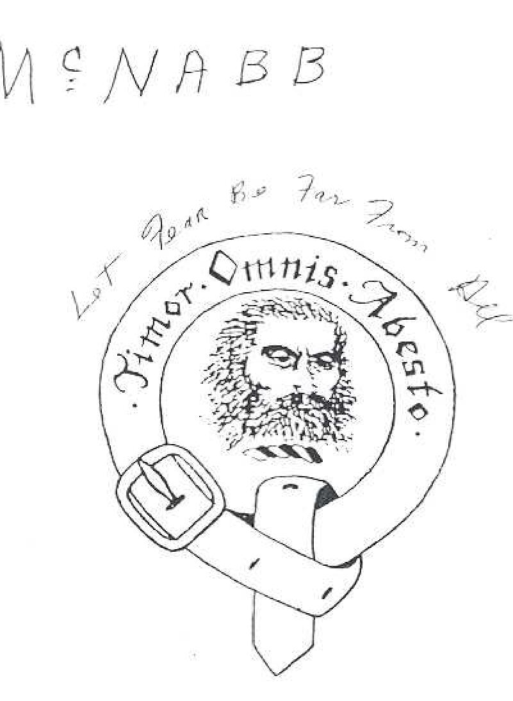
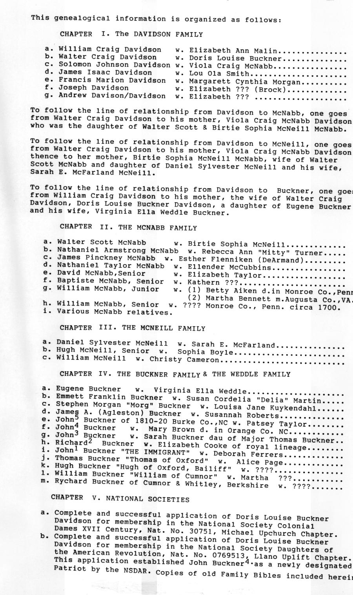
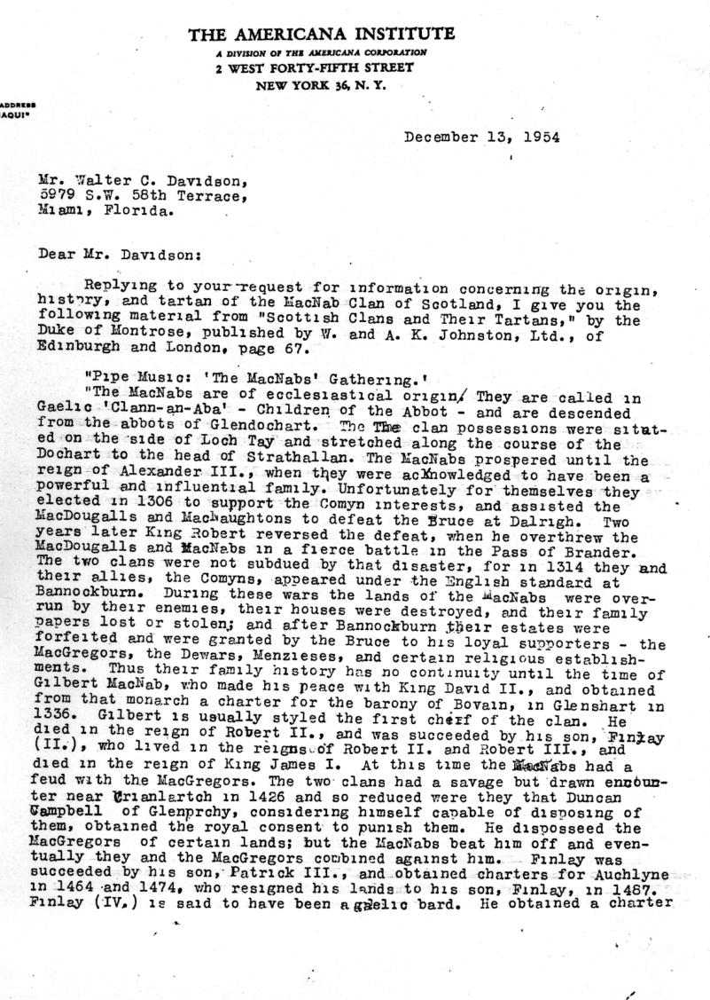
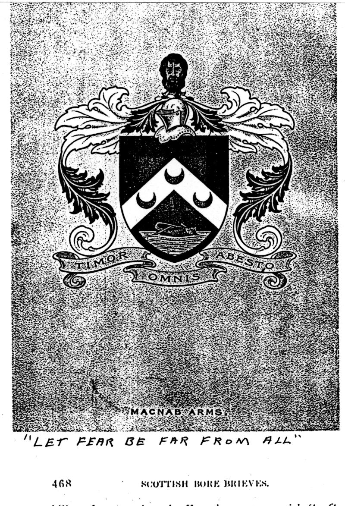
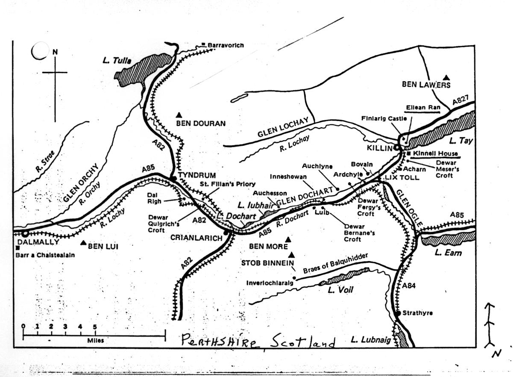
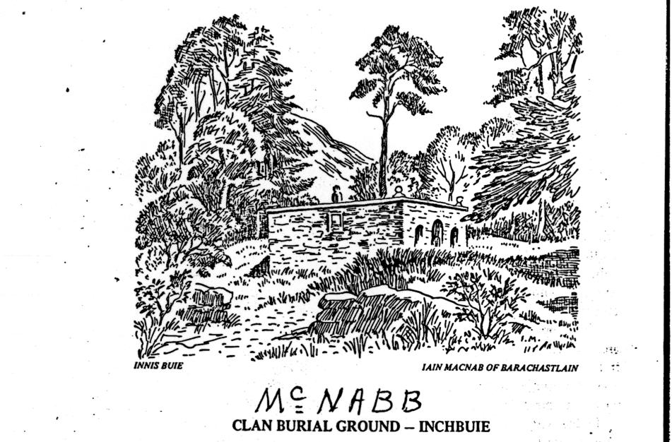

Walter Craig Davidson’s Research

Much of the history preserved in this archive rests on the genealogical research assembled by Walter Craig Davidson.
Paul Duke recalls his mother, Beverly Nan McNabb Orr, describing years of research by Craig, including journeys to Scotland in search of church records. Those details come from family recollection; the surviving documents also show his long-standing interest in historical sources and records.
The clan crest carries the motto Timor Omnis Abesto — “Let fear be far from all.”
How the research reached our family
As Paul remembers his mother telling the story, her brother Warren Neil McNabb received a copy of Craig’s research and later shared it with Nan and their cousin Jimmy Nagle. They examined the collection and extended the family history with more recent generations.
Nan eventually assembled her own research notebook and gave copies to her children. Paul used his copy to build the original family website, later working with Neeve McNabb to add biographies, photographs and other material.
What Craig collected
The original contents page identifies a research collection substantially broader than the documents now available on this website. It lists five chapters:
- The Davidson Family
- The McNabb Family
- The McNeill Family
- The Buckner and Weddle Families
- National Societies — genealogical applications and supporting records

The online search currently covers 277 individually scanned pages: 247 labeled as McNabb material and 30 as McNeill material. We do not know where the remaining chapters of Craig’s research are today.
A glimpse into the documents
The opening pages contain much more than names and dates: clan insignia, historical articles, illustrations and correspondence. A letter dated December 13, 1954, addressed to Walter C. Davidson in Miami, answers his inquiry about the MacNab clan’s origins, history and tartan.


A historical map places many of the clan landmarks around Killin, Loch Tay and Glen Dochart in Perthshire, Scotland. Below is a drawing of the old clan burial ground on Inchbuie.


These pages include older historical accounts collected by Craig; they are not all Craig’s own writing. The scans preserve the original material, while OCR text makes it searchable but can contain transcription errors.
Explore the complete surviving collection
Search the recognized text, inspect a page, then open the matching original scan if the OCR is unclear.
Can you help locate the missing research?
Craig also researched other branches of the family. If additional notebooks or research documents survive among relatives, we would be interested in hearing about them. Neeve McNabb welcomes family stories, photographs, corrections, and additional research. You can contact her through her Facebook profile. For a printed copy of this archive, scan the QR code below to visit her profile.